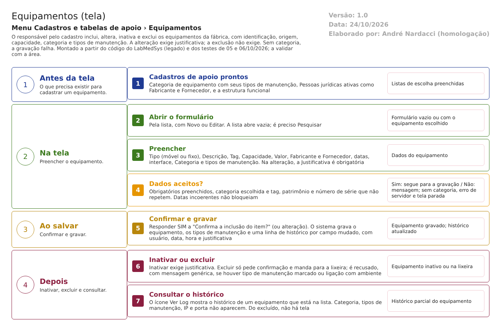

Fluxograma no arquivo 02-equipamentos.fluxo.json, em 4 fases. Etapas, na mesma ordem do arquivo:
- Etapa 1. Cadastros de apoio prontos: categoria com tipos de manutenção, fabricantes, fornecedores e estrutura funcional (Antes da tela).
- Etapa 2. Abrir o formulário: Novo ou Editar (Na tela).
- Etapa 3. Preencher o equipamento: identificação, origem, capacidade, valor e categoria (Na tela).
- Etapa 4. Dados aceitos? (decisão): obrigatórios, categoria e repetição de tag, patrimônio e série (Na tela).
- Etapa 5. Confirmar e gravar: justificativa na alteração (Ao salvar).
- Etapa 6. Excluir ou inativar: sem justificativa na exclusão; remover antes os tipos de manutenção (Depois).
- Etapa 7. Consultar o histórico: não disponível para o excluído (Depois).
Saídas alternativas: VOLTAR sai sem gravar; Consultar abre sem poder gravar.
Situações e histórico
Situações
- Ativo (Sim): disponível nas listas de escolha.
- Inativo (Não): o formulário abre travado (equipamento_ed.aspx.cs:127-130). Nenhum cadastro do Principal oferece lista de equipamentos para escolha; a saída das listas de outros módulos ficou para eles (CT-PRI-093, 05/10/2026).
- Excluído (lixeira): some da lista; o registro continua no banco (dalEquipamento.cs:384-402).
- Um equipamento fixo ou móvel é só uma classificação (Tipo): não muda a situação.
O que grava na trilha de auditoria (histórico)
- Inclusão: linha "INCLUSÃO DO REGISTRO" com usuário, data e hora (dalLogAlteracaoEquipamento.cs).
- Alteração: uma linha por campo mudado entre ATIVO, DESCRIÇÃO, TAG, PATRIMÔNIO, MODELO, NÚMERO DE SÉRIE, CAPACIDADE DE PRODUÇÃO, VALOR, DATA INÍCIO OPERAÇÃO, DATA FIM OPERAÇÃO, FABRICANTE, FORNECEDOR, ESTRUTURA FUNCIONAL e TIPO EQUIPAMENTO, com valor antigo, valor novo, usuário, data, hora e justificativa (CT-PRI-092).
- Exclusão: linha "EXCLUSÃO DO REGISTRO" com usuário, sem justificativa (dalLogAlteracaoEquipamento.cs:233-244).
- O histórico vai para a tabela geral de histórico do Principal; cada valor cabe em 255 caracteres (SEG-PRI-13).
O que não grava
- O motivo da exclusão (DV-PRI-009).
- A mudança de categoria, de tipos de manutenção, de data de fabricação, de outros fabricantes, de endereço IP e de porta: esses campos não estão no registro de histórico (dalLogAlteracaoEquipamento.cs).
- Calibração, qualificação e manutenção realizadas: não são guardadas no Principal.
- O histórico de um equipamento excluído não pode ser consultado pelas telas (DV-PRI-014; mesmo desenho do Ambiente).
Dados
Tabelas do banco
| Tabela | Colunas principais | Chaves e ligações | Fonte |
|---|---|---|---|
TBL_EQUIPAMENTO (no código: TBL_EQUIPAMENTO_PRINCIPAL) |
ID_EQUIPAMENTO, DESCRICAO, TAG, PATRIMONIO, MODELO, NUMERO_SERIE, datas de operação e de fabricação, ID_FABRICANTE, OUTROS_FABRICANTES, ID_FORNECEDOR, ID_ESTRUTURA_FUNCIONAL, TIPO_EQUIPAMENTO, CAPACIDADE_PRODUCAO, VALOR, ATIVO, LIXEIRA, IP_EQUIPAMENTO, PORTA_EQUIPAMENTO, ID_CATEGORIA_EQUIPAMENTO | Liga a GBL_PJ (fabricante e fornecedor), SIS_LOCAL, TBL_CATEGORIA_EQUIPAMENTO e SIS_USUARIO | TBL_EQUIPAMENTO.sql:1-27; dalEquipamento.cs:272-319 |
| TBL_EQUIPAMENTO_TIPO_MANUTENCAO | ID_EQUIPAMENTO, ID_TIPO_MANUTENCAO | Tipos de manutenção do equipamento; sem coluna de lixeira, por isso impedem a exclusão | TBL_EQUIPAMENTO_TIPO_MANUTENCAO.sql:1-9; pPossoExcluir.sql:70-85 |
| TBL_TIPO_MANUTENCAO_EQUIPAMENTO | ID, DESCRICAO (50), ATIVO | Lista dos tipos de manutenção | TBL_TIPO_MANUTENCAO_EQUIPAMENTO.sql:1-7 |
| TBL_CATEGORIA_EQUIPAMENTO e TBL_CATEGORIA_EQUIPAMENTO_TIPO_MANUTENCAO | Categoria e seus tipos padrão | Ligam ao equipamento | TBL_CATEGORIA_EQUIPAMENTO.sql:1-15 |
| TBL_EQUIPAMENTO_AMBIENTE | ID_AMBIENTE, ID_EQUIPAMENTO, LIXEIRA | Onde o equipamento está instalado (mantido na tela de Ambientes) | TBL_EQUIPAMENTO_AMBIENTE.sql:1-14 |
| GBL_PJ | Fabricante e fornecedor | Cadastro da tela 03 | GBL_PJ.sql |
| TBL_LOG_ALTERACAO_PRINCIPAL | Histórico | Idem Ambientes | dalLogAlteracao.cs:25-26 |
Leituras e gravações em outros módulos
| Módulo | O que é lido ou gravado | Meio | Fonte |
|---|---|---|---|
| Produção | Lê equipamentos, categorias, tipos de manutenção e as ligações com ambiente | Sinônimos de banco | 06-modelo-de-dados.md:190-194 |
| Outros módulos (consulta) | Descrição e tag por texto, o equipamento por número e por tag, e os tipos de manutenção por equipamento | Serviço api/Equipamento (ListEquipamentosPorDescricao, GetEquipamento, GetEquipamentoByTag, GetVerificacoesPorEquipamento) |
EquipamentoController.cs:20-100 |
| Principal (Ambientes) | Lista de equipamentos ativos para ligar a um ambiente | Consulta no mesmo banco | ambiente_ed.aspx.cs:74-85 |
| Estoque | Não lê equipamentos | Não se aplica | 06-modelo-de-dados.md:190-194 |